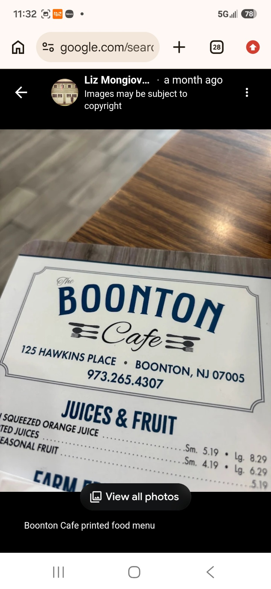
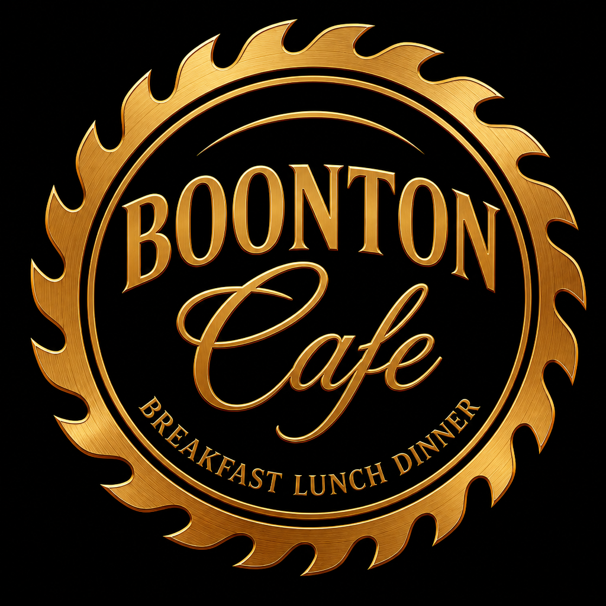
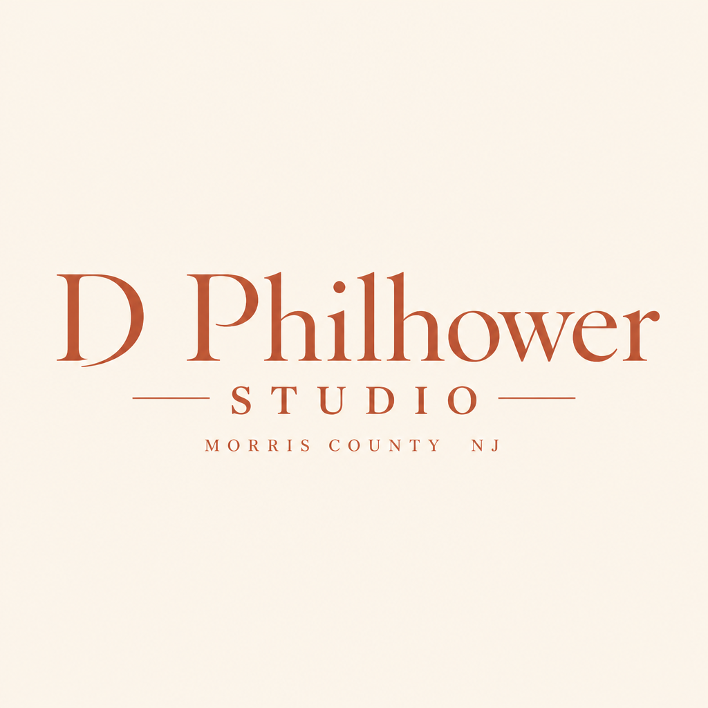
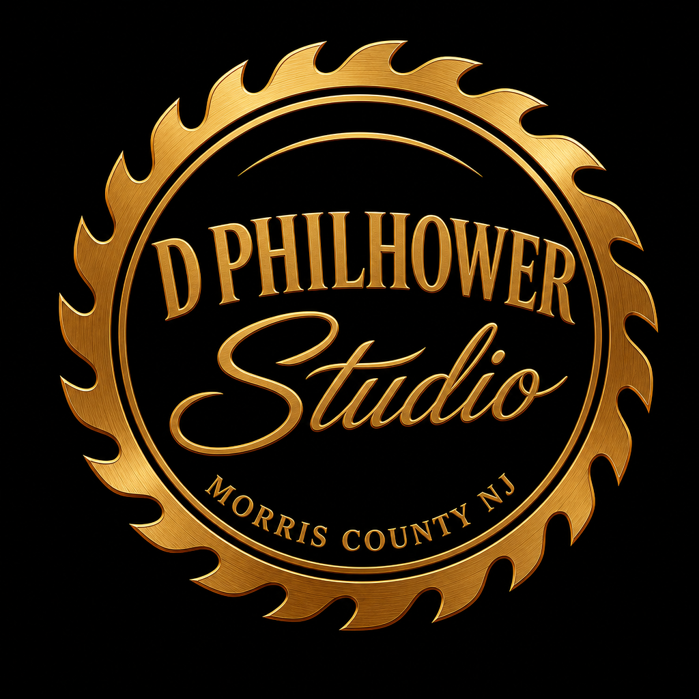

Identity redesign
Two seals, one Hills blade
Boonton Cafe and D Philhower Studio rebuilt on the Service The Hills formula: bronze saw blade, black field, caps serif authority, script place or craft, curved tagline. The tool, not the column.

Service The Hills
Caps SERVICE. Script The Hills. Curved RENOVATE REMODEL RESTORE. Bronze blade, black center. Both redesigns inherit this lockup.
The Boonton Cafe
Navy rectangle and cutlery out. BOONTON carries the serif authority; Cafe takes the Hills script; BREAKFAST LUNCH DINNER rides the bottom arc.


D Philhower Studio
Terracotta cream wordmark out. D PHILHOWER takes the caps ring; Studio takes the script; MORRIS COUNTY NJ closes the seal.


Shared system
- Circular saw blade in brushed bronze — grit with glamour
- Black center field, thin gold top arc
- Caps serif on top, formal script in the middle
- Small caps tagline curved on the bottom ring
- No colonial navy box, no cream terracotta wordmark